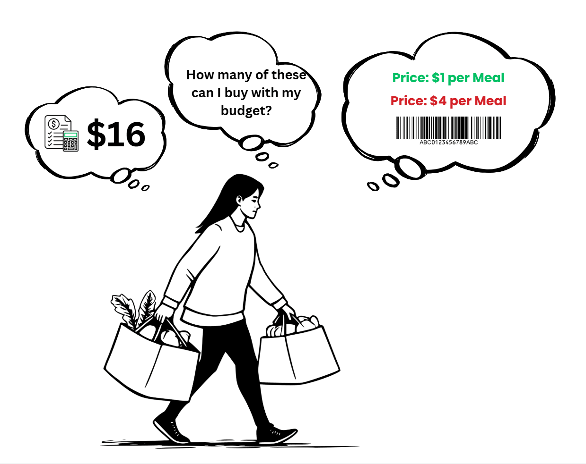
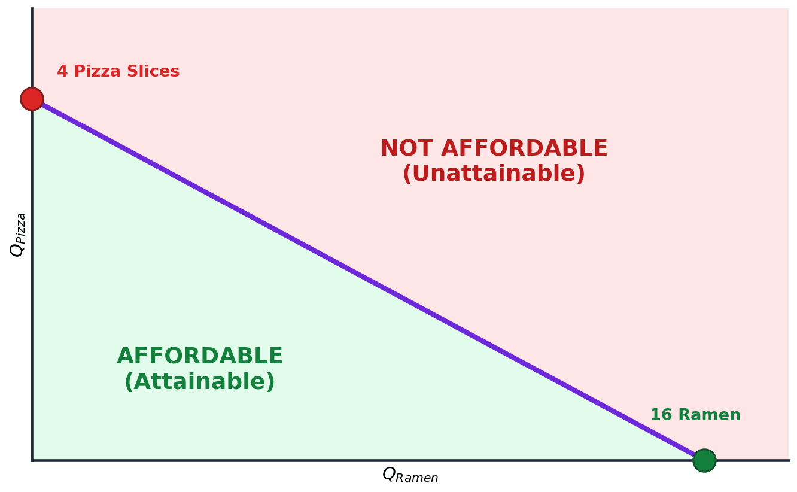
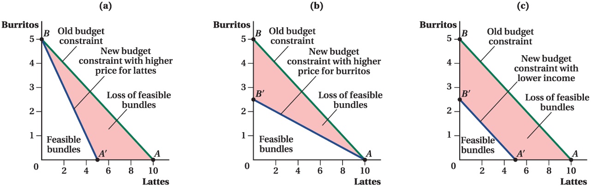
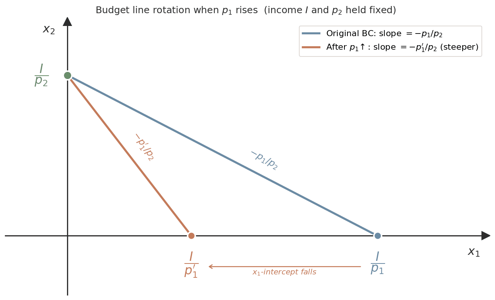
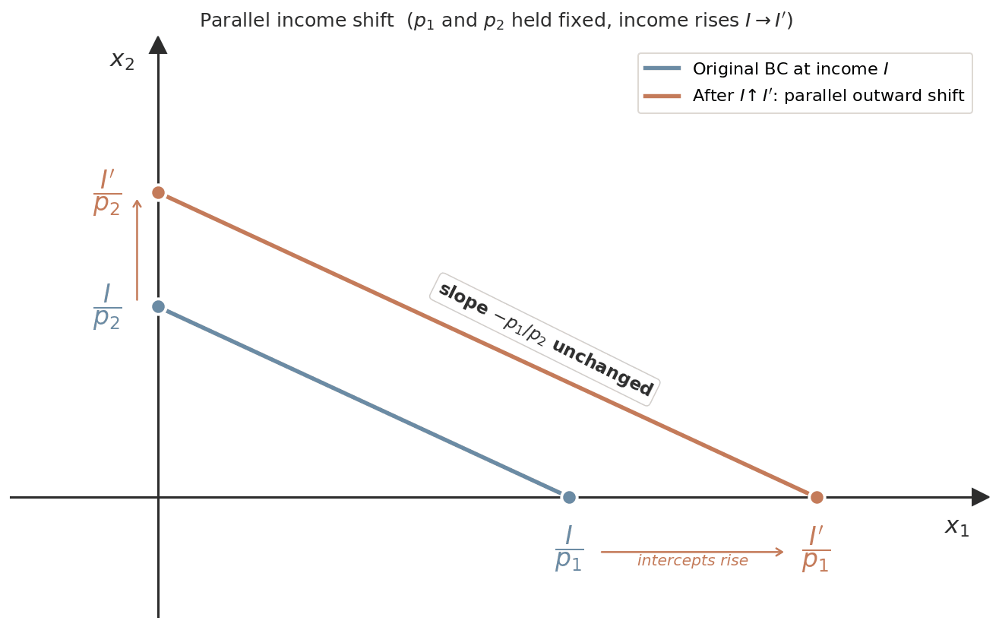
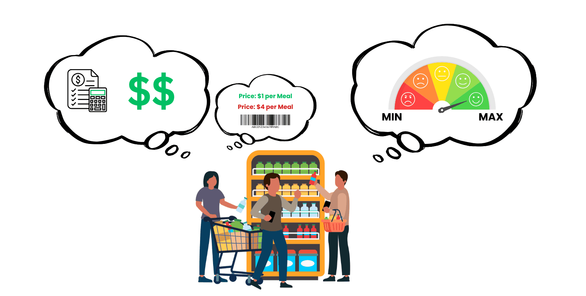
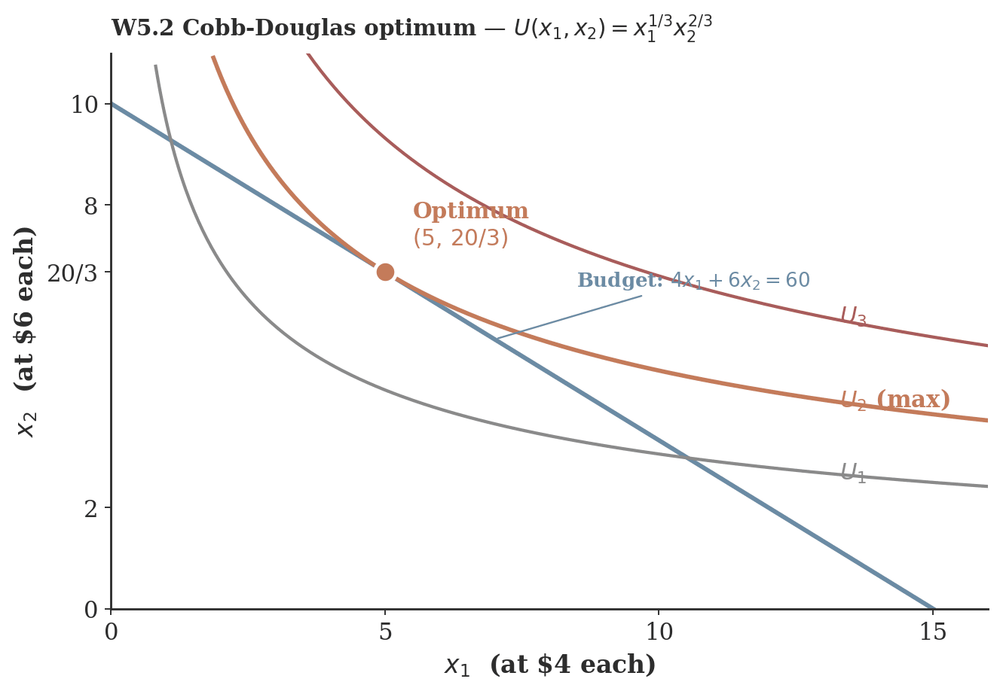
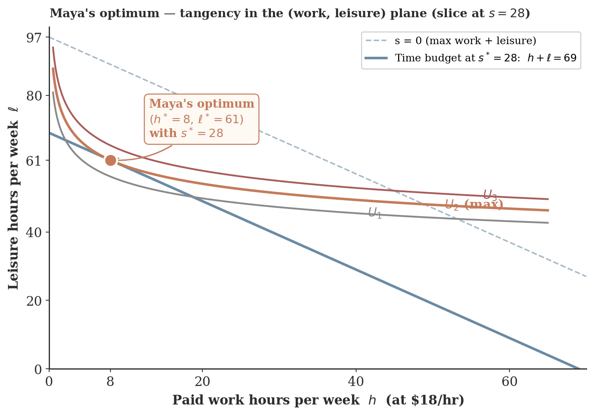
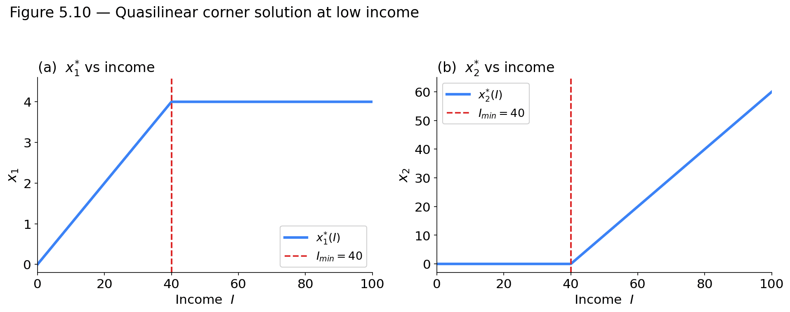

Click anywhere (or press Esc) to close
ECON 2316 • Microeconomic Theory • Chapter 5
From bent budget lines to the Lagrangian — six closed-form demand systems, a kink that costs the federal government \$70B per year, and a multiplier borrowed from celestial mechanics.
Dr. Richeng Piao
Department of Economics
Northeastern University
By the end of class today, you will be able to…
5.1
Formalize the budget set \(B(p, I)\) and the budget constraint; predict the rotation/shift caused by price and income changes. (Bloom L3)
5.2
State and derive the two equivalent FOCs of an interior optimum: \(\mathrm{MRS} = p_1/p_2\) and \(MU_1/p_1 = MU_2/p_2 = \lambda\). (Bloom L4)
5.3
Set up and solve the Lagrangian \(\mathcal{L} = U + \lambda(I - p_1 x_1 - p_2 x_2)\); interpret \(\lambda^*\) as the marginal utility of income (utils/\$). (Bloom L4)
5.4
Derive closed-form Marshallian demand for the four canonical utility families — Cobb-Douglas, perfect substitutes, perfect complements, quasilinear. (Bloom L4)
5.5
Diagnose corner solutions and kinked-budget optima (KKT preview); apply to labor-leisure, ACA APTC, and SNAP. (Bloom L5)
You · \$200 a month for fun
| Netflix Premium | $25.10 |
| Spotify Individual | $12 |
| Gym membership | $50 |
| Night out with friends | $30 |
| Concert ticket | $128 avg |
Every choice has an opportunity cost: an extra night out is a gym month you did not buy.
The average U.S. household · \$78,535 a year
| Housing | 33.4% | $26,266 |
| Transportation | 17.0% | $13,318 |
| Food | 12.9% | $10,169 |
| Insurance & pensions | 12.5% | $9,797 |
| Healthcare | 7.9% | $6,197 |
| Entertainment | 4.6% | $3,609 |
| All other | 11.7% | $9,178 |
Housing, transport and food take ~63% before any free choice begins.
Same two ingredients at every scale: what you can afford (the budget set) + what you want (preferences, Ch 4) → the best affordable bundle. Today: the first half.
Household data: U.S. BLS, Consumer Expenditure Surveys, 2024. Prices: typical 2025 list prices.
The average U.S. household spent $78,535 in 2024. Housing + transportation alone took up roughly half of the budget.
| Category | Share | Spending |
|---|---|---|
| Housing | 33.4% | $26,266 |
| Transportation | 17.0% | $13,318 |
| Food | 12.9% | $10,169 |
| Insurance & pensions | 12.5% | $9,797 |
| Healthcare | 7.9% | $6,197 |
| Entertainment | 4.6% | $3,609 |
| All other | 11.7% | $9,178 |
The big-three squeeze
Housing (33%), transport (17%), food (13%) absorb ~63% of the average household’s budget — almost all of it goes to necessities before any discretionary choice begins.
What this means for the model
A real household’s “budget” for two-good choices is the slice left after fixed obligations. We model it with a small income (e.g. Maya’s $16/week) to keep the math clean.
Source: U.S. BLS, Consumer Expenditure Surveys, 2024 data.
bls.gov/opub/ted/2026/housing-and-transportation-accounted-for-50-percent…
15 min · What the consumer can afford — and why real budgets bend
Budget constraint: all combinations of two goods a consumer can afford, given income and prices.
Maya has \$16 a week. Ramen \$1 a pack, pizza \$4 a slice:
\(1 \cdot Q_R + 4 \cdot Q_P = 16\)
All ramen: 16 packs. All pizza: 4 slices.
Slope = relative price. Ramen across, pizza up: \(\text{slope} = -\dfrac{P_R}{P_P} = -\dfrac{1}{4}\). One more ramen costs ¼ slice; read the other way, one slice costs 4 ramen.
A price trade-off, not a preference trade-off. The market sets this rate; Maya cannot change it. Her own willingness to trade is her MRS (Ch 4). §5.2: the best bundle is where the two agree, \(\mathrm{MRS} = P_R/P_P\).

Pin three points: half and half, then all pizza, then all ramen.
Connect them: the budget line. Every bundle on it costs exactly \$16. Slope −¼: one more ramen costs ¼ slice.
Inside or on it: attainable. On it, every dollar spent; inside, money left.
Above it: unattainable at these prices and this income.
The line says what Maya can buy; her preferences decide where on it she ends up.

Inside or on the line
Attainable. Maya can buy these bundles. On the line = spent every dollar. Below the line = saved some money.
Above the line
Unattainable. Cost would exceed $16. Maya can’t buy any of these bundles — not with her current income and prices.
The budget set
\[B(p_1, p_2, I) = \{(x_1, x_2) \in \mathbb{R}^2_{+} \mid p_1 x_1 + p_2 x_2 \leq I\}\]
Maya’s is \(B(1, 4, 16)\). The \(\mathbb{R}^2_{+}\) says no negative quantities; the boundary (\(=\)) is the budget constraint; its slope \(-p_1/p_2\) is the relative price.
1 · Income changes
Both intercepts \(I/p\) scale together. Parallel shift, slope unchanged.
2 · One price changes
Its own intercept moves; the other stays. Pivot, and the slope \(-p_R/p_P\) changes.
🍜 Maya’s food money doubles: \$16 → \$32. Same week, ramen doubles too: \$1 → \$2 a pack. 🍕 Pizza does not budge, \$4 a slice. So — is she better off, and where?
60 sec to vote
\(\dfrac{2I}{2p_1} = \dfrac{I}{p_1}, \qquad \dfrac{2I}{p_2} = 2\cdot\dfrac{I}{p_2}\)
The trap is C. If pizza had doubled too, nothing would change — that is the next slide. But pizza did not: it got relatively cheaper, so the line pivots around all-ramen and gets steeper.

(a) \(2 \times p_L\) (lattes)
\(Q_B = 5 - \tfrac{1}{2} Q_L\)
\(\to \;\; Q_B = 5 - Q_L\)
Pivot around \(B\); \(A \to A'\); slope steepens.
(b) \(2 \times p_B\) (burritos)
\(Q_B = 5 - \tfrac{1}{2} Q_L\)
\(\to \;\; Q_B = 2.5 - \tfrac{1}{4} Q_L\)
Pivot around \(A\); \(B \to B'\); slope flattens.
(c) \(\tfrac{1}{2} \times\) Income
\(Q_B = 5 - \tfrac{1}{2} Q_L\)
\(\to \;\; Q_B = 2.5 - \tfrac{1}{2} Q_L\)
Parallel inward shift; same slope.
\(p_1\) rises with \(p_2\) and \(I\) held fixed:
Price rotation = same income, different relative prices ⇒ the menu of feasible trade-offs changes.

Figure 5.2 — \(p_1\) rises ⇒ pivot inward along \(x_1\) axis.
\(I\) rises with both prices held fixed:
Income shift = same relative prices, more money ⇒ pure income effect, no substitution effect.

Figure 5.3 — \(I\) rises ⇒ parallel outward shift, same slope.
Why: \(\alpha\) cancels
\(\alpha p_1 x_1 + \alpha p_2 x_2 = \alpha I \iff p_1 x_1 + p_2 x_2 = I\)
Vocabulary
\(B(p, I)\) is homogeneous of degree zero in \((p, I)\), and demand inherits it: \(x_i^*(\alpha p, \alpha I) = x_i^*(p, I)\).
Why it matters
Pure inflation (every price and income up together) changes nothing real. It is also why any one price can be set to 1.
Problem
Alex has \$150 a month for fun: video games \(G\) at \$80 each and Uber Eats deliveries \(U\) at \$30 each.
(a) The constraint
\(80G + 30U = 150 \;\iff\; U = 5 - \tfrac{8}{3}G\)
Intercepts: \(A = (0, 5)\), all deliveries; \(B = (150/80, 0) = (1.875, 0)\), all games.
Slope \(-p_G/p_U = -80/30 = -8/3 \approx -2.67\): one game costs \(8/3\) deliveries.
(b) One game
\$80 on the game leaves \$70.
\(U = 70/30 = 7/3 \approx 2.33\) deliveries.
\(C = (1,\, 7/3)\)
Context: in 2024 the average U.S. household spent \$78,535 (BLS CEX), 4.6% of it on entertainment.
| Before: \$80 | After: \$50 | |
| Constraint | \(80G + 30U = 150\) | \(50G + 30U = 150\) |
| All deliveries (A) | \(5\) | \(5\) unchanged |
| All games | \(B = 1.875\) | \(D = 150/50 = 3\) rises |
| Slope | \(-8/3 \approx -2.67\) | \(-5/3 \approx -1.67\) flatter |
A game now costs only \(5/3\) deliveries.
Geometric reading. The line pivots outward around \(A\), the intercept whose price did not change, opening the triangle \(ABD\) of newly affordable bundles.
Takeaway. The slope is \(-p_G/p_U\) whatever the income: income shifts the line parallel, prices rotate it.
Game price
Games bought, G
Lin has \$30 a week · energy drinks \$5 · API tokens \$3/M for the first 5M, then \$1.50/M (Batch).
Step 1 · all at \$3
\(5E + 3T = 30 \Rightarrow T = 10 - \tfrac{5}{3}E\)
Step 2 · past 5M at \$1.50
\(5E + 3\cdot 5 + 1.5\,(T-5) = 30 \Rightarrow T = 15 - \tfrac{10}{3}E\)
first 5M at \$3 = \$15 · every token after that at \$1.50
Step 3 · which applies?
Standard for \(T \le 5\), Batch for \(T > 5\). They cross at \(E = 3,\ T = 5\): \$15 spent on tokens.
Step 4 · the real budget
Keep the piece that applies on each side: Batch above the kink, standard below.
Step 5 · what the discount buys
The wedge: bundles out of reach at \$3/M. Same shape as AWS tiers, Costco bulk, tiered electricity.
Energy drinks, E
Same \$30, same prices — but a 5M-token weekly rate limit. Income and prices did not change; a rule did.
Flat at the cap
For \(E \le 3\) the line is horizontal at \(T = 5\): no more tokens, however much money is left.
Affordable, not allowed
The pink triangle: the Batch bundles she could pay for, blocked by the rule.
Money left over
On the flat top \(5E + 3T < 30\): at (1.5, 5) she has \$7.50 unspent. Why will she never stop there? (§5.2)
15 min · Two ways to write one optimum: slope form and ratio form
§5.1 · What she can do
The account and the price tag — the two bubbles on the left. Together, the budget constraint.
\(p_1x_1 + p_2x_2 \le I\)
a fact about the world

Ch 4 · What she wants
The satisfaction gauge — the bubble on the right. That is utility; the MRS is its slope.
\(\max\; U(x_1,x_2)\)
a fact about her
Put the two together and exactly one bundle survives: Marshallian demand, \(x^*(p_1,p_2,I)\) — the bundle that maximises \(U\) subject to the budget. Everything in §5.2 is a way of locating it.
Whose preferences
Loading the class’s answers…
1 · Climb the map
2 · Now reality
1 · The internal voice
The curve’s slope is the MRS — the rate you are willing to trade. From Ch 4, \(\mathrm{MRS}_{1,2} = MU_1/MU_2\).
2 · Market reality
The line’s slope is \(p_1/p_2\) — the rate the market makes you trade. Nothing subjective about it.
3 · At the tangent point
The two slopes are the same number: \(\;\dfrac{MU_1}{MU_2} = \dfrac{p_1}{p_2}.\)
So the consumer is doing the best they can afford. Their own trade-off already matches the market’s, so no affordable trade is worth making — and no reachable bundle is better.
4 · Three lines of algebra
\(MU_1 \cdot p_2 = MU_2 \cdot p_1\) → divide by \(p_1 p_2\) →
Same condition, second costume:
the equimarginal principle.
Alex’s $150, all of it spent
Games $80 · Uber Eats $30. Slide to move money between them.
🎮 Games
—
utils per dollar
🍔 Uber Eats
—
utils per dollar
Keep shifting and you stop exactly where neither move helps: \(\;\dfrac{MU_1}{p_1} = \dfrac{MU_2}{p_2} = \lambda.\)
And it stays there. Everywhere else one good pays more per dollar, so there is always a reason to move. Here there is none — that is what makes it an equilibrium.
One student with about 45 GB of photos, messages and phone backup. Two plans:
iCloud+ 50 GB
\$0.99 / mo · \$0.020 per GB
Storage they actually use
45 of 50 GB — nearly all of it earns its keep
Utility per dollar
101 highest
Google One 2 TB
\$9.99 / mo · \$0.005 per GB — cheapest
Storage they actually use
the same 45 of 2,000 GB — and 1.95 TB of paid-for empty space
Utility per dollar
60 lower
The trap
On price per gigabyte Google One wins outright — \$0.005 against \$0.020. Four times cheaper per unit.
Why it still loses
The marginal gigabyte of a plan you have filled to 2% is worth \(\approx 0\) utils. Those dollars buy empty space, and empty space has no marginal utility.
Same rule, new setting
Pick the highest \(MU/\$\) — and keep going until \(MU_1/p_1 = MU_2/p_2\) across everything in the budget, not just cloud tiers.
What if two consumers have different preferences? Will they end up with the same MRS at their optimal bundles?
Yes — because they face the same ratio of prices.
Same budget, different ICs
Priya and Diego share the same income and prices — same budget line. But Priya's IC is flat — three quarters of her spending goes to Audible; Diego's is steep, three quarters to Spotify.
Different optimal bundles
Priya picks \(P = (2.5,\,7.5)\) — lots of Audible, few Spotify. Diego picks \(D = (7.5,\,2.5)\) — the opposite.
Same MRS at both bundles
At \(P\) and at \(D\), the IC is tangent to the budget ⇒ \(\mathrm{MRS} = p_S/p_A\) for both. Markets equalize the MRS across consumers, even when preferences differ.
\[\max_{x_1, x_2 \geq 0} \; U(x_1, x_2) \quad \text{subject to} \quad p_1 x_1 + p_2 x_2 \leq I.\]
Existence (Weierstrass)
\(U\) continuous on a compact budget set ⇒ the max exists. The compactness comes from the budget being a closed, bounded triangle.
Uniqueness
\(U\) strictly quasi-concave (preferences strictly convex) ⇒ the maximizer is unique. Recovered from Ch 4 axiom 4.
The output: Marshallian demand functions \(x_1^*(p_1, p_2, I)\) and \(x_2^*(p_1, p_2, I)\) — the central objects of consumer theory.
At an interior optimum, the highest indifference curve the consumer can reach is tangent to the budget line. Tangency means equal slopes:
Indifference-curve slope
\(-\mathrm{MRS}_{1,2} \;=\; -MU_1/MU_2\)
from implicit differentiation of \(U(x_1, x_2) = \bar{U}\), Ch 4
Budget-line slope
\(-p_1/p_2\)
opportunity cost of \(x_1\) in units of \(x_2\)
\[\boxed{\;\mathrm{MRS}_{1,2} \;=\; \dfrac{MU_1}{MU_2} \;=\; \dfrac{p_1}{p_2}.\;}\]
\(\lambda \;=\; \dfrac{\Delta\,\text{utils}}{\Delta\,\$1}\)
Hand the consumer one more dollar and let them re-optimise. \(\lambda\) is how many extra utils come back — a rate, in utils per dollar. Everything below says that more precisely.
If you handed the consumer one more dollar of income, how many additional utils would they extract from it (when re-optimizing)?
\[\boxed{\;\dfrac{\partial v(p, I)}{\partial I} = \lambda^*.\;}\]
This is the envelope theorem — stated here, proved in Math Appendix A.6, and used again in Ch 8 on the cost side. \(v(p, I)\) is the indirect utility function: the value of \(U\) at the optimum, as a function of \(p\) and \(I\).
HU2 — Units matter.
\(\lambda\) is in utils per dollar, not utils, not dollars. Walkthrough W5.2 will produce \(\lambda^* \approx 0.10095\) utils/\$; Walkthrough 5.5 in the chapter (reading) gets \(\lambda^* = 12\) "dollars per discretionary hour" because its utility weights were chosen to make utils dollar-equivalent.
Why \(\lambda\) is interesting. It is the shadow price of the constraint — the value to the consumer of relaxing the budget by \$1. In production theory (Ch 8), the same multiplier becomes the firm's shadow value of a relaxed resource constraint.
The problem
Riley spends her \$48 weekly fun budget on 🍣 sushi rolls (\(S\), \$8 each) and 🍩 mochi donuts (\(M\), \$4 each). Her utility is Cobb-Douglas:
\[U(S, M) = \sqrt{S\,M} = S^{0.5} \, M^{0.5}\]
Marginal utilities (given):
\(MU_S = 0.5\,S^{-0.5} M^{0.5}\) · \(MU_M = 0.5\,S^{0.5} M^{-0.5}\)
What are Riley's utility-maximizing quantities \(S^*\) and \(M^*\)?
Step 1 — set MRS = price ratio
\(\mathrm{MRS}_{SM} = \dfrac{MU_S}{MU_M} = \dfrac{0.5\,S^{-0.5} M^{0.5}}{0.5\,S^{0.5} M^{-0.5}} = \dfrac{M}{S} = \dfrac{p_S}{p_M} = \dfrac{8}{4} = 2\)
⇒ \(M = 2S.\)
Step 2 — substitute into the budget
\(8S + 4M = 48 \;\;\Longrightarrow\;\; 8S + 4(2S) = 48 \;\;\Longrightarrow\;\; 16S = 48\)
⇒ \(S^{\!*} = 3\), \(M^{\!*} = 6.\)
Answer: Riley buys 3 sushi rolls + 6 mochi donuts. Check: \(8(3) + 4(6) = 24 + 24 = \$48\) ✓. Equimarginal: \(\tfrac{MU_S}{p_S} = \tfrac{MU_M}{p_M} \approx 0.09\) utils/\$ at the optimum. Next slide — see it on the graph.
Step 3 — what the answer also gives you
Marshallian demand — run Steps 1–2 again with letters instead of numbers:
\(M = \tfrac{p_S}{p_M}S\), so \(\;p_S S + p_M\!\left(\tfrac{p_S}{p_M}S\right) = I \Rightarrow 2p_S S = I\):
\(\;S^{\!*}(p, I) = \dfrac{I}{2p_S},\; M^{\!*}(p, I) = \dfrac{I}{2p_M}\) — the answer at any prices and income.
And \(\lambda\) — that 0.09 is \(\lambda^{\!*} = \dfrac{1}{2\sqrt{p_S p_M}} \approx 0.0884\) utils/\$. Since \(v(p, I) = \dfrac{I}{2\sqrt{p_S p_M}}\), \(\;\partial v/\partial I = 0.0884\) as well: one more dollar of fun money buys Riley 0.088 utils.
Try on your own · 3 min · press → to step through the solution
What the picture shows
The budget line intersects three indifference curves. The highest one Riley can reach while staying on her \$48 budget is \(U_2 \approx 4.24\) — tangent at (3, 6).
Tangency = Equimarginal
Both curves have slope \(-2\) at the optimum: \(\;\dfrac{MU_S}{MU_M} = \dfrac{M}{S} = 2 = \dfrac{p_S}{p_M}.\;\) Same FOC as the tangency condition — only the numbers change.
Other on-budget bundles lose: \((1, 10)\) and \((5, 2)\) both cost \$48 but sit on \(U_1\) (\(U \approx 3.16\)) — lower utility. Only the tangency point hits the highest reachable IC.
15 min · The auxiliary variable that does all the work
You already know the conditions — tangency, equal MU per dollar, \(\lambda\). This is the one calculation that produces all of them, in a form that keeps working when the picture runs out.
From the Mécanique preface, 1788
“No diagrams will be found in this work.”
Newton tracked planets with shapes and angles. Lagrange threw the pictures away and did mechanics as pure algebra — the move that makes \(\lambda\) possible.
Born in Turin; a teenager headed for law until he read Halley on algebra in optics. Succeeded Euler at the Berlin Academy in 1766, at 30. Mécanique Analytique (1788) founds analytical mechanics.
1788 · mechanics
1900s · consumer theory
a pendulum bob 🕰️
→🛒 a consumer with a budget
the string it hangs from 🧵
→💵 the budget line
the constraint force 🪢
the tension in the string
💰 \(\lambda\), the marginal
utility of income
Hicks & Allen (1934), tracing back to Slutsky (1915), carried it across. Nothing about the algebra changed — only what the symbols were about.
\[\mathcal{L}(x_1, x_2, \lambda) \;=\; \underbrace{{\color{#C47B5A} U(x_1, x_2)}}_{{\color{#C47B5A}\text{what you want}}} \;+\; \underbrace{{\color{#6d28d9}\lambda}}_{{\color{#6d28d9}\text{its price}}}\underbrace{{\color{#4A6B84}\big( I - p_1 x_1 - p_2 x_2 \big)}}_{{\color{#4A6B84}\text{money left over}}}\]
What you want
Whatever \(U\) you were handed, untouched. The goal does not change shape.
The multiplier
You invent it. The algebra hands it back as the price of the constraint — \(\lambda\) from slide 26.
The budget, as slack
Written \(\geq 0\) — “you may spend up to \(I\)” — so \(\lambda \geq 0\): more income cannot hurt. At the optimum it is exactly zero.
Not a penalty: that last term is not a fine for overspending, and it is not there to stop you buying infinity. At the optimum the bracket is exactly zero — it is there to impose the budget and the equimarginal condition together.
FOC 1 — in \(x_1\)
\(\partial \mathcal{L}/\partial x_1 = MU_1 - \lambda p_1 = 0\)
FOC 2 — in \(x_2\)
\(\partial \mathcal{L}/\partial x_2 = MU_2 - \lambda p_2 = 0\)
FOC \(\lambda\) — in \(\lambda\)
\(\partial \mathcal{L}/\partial \lambda = I - p_1 x_1 - p_2 x_2 = 0\)
Not a third idea — it just hands the budget constraint back. Bookkeeping, but it is what makes the constraint bind.
Divide FOC 1 by FOC 2
\(\lambda\) cancels, and what is left is the rule the class already met:
\[\boxed{\;\dfrac{MU_1}{p_1} \;=\; \lambda \;=\; \dfrac{MU_2}{p_2}\;}\]
The equimarginal principle is the FOC of the Lagrangian — slide 21’s rule, now derived rather than argued.
And that common value is not new either — it is \(\lambda\), the marginal utility of income from slide 26. Three derivatives, and every piece of §5.2 falls out at once.
And no picture was needed. The bundle slide 28 found by eye — where the curve just touches the line — is the bundle these three derivatives find by algebra. That is what Lagrange was claiming on slide 30: “no diagrams will be found in this work.”
Overnight, someone doubles every utility number: \(V(x_1, x_2) = 2\,U(x_1, x_2)\). Same prices, same income, and she picks the same bundle as before. Does \(\lambda^*\) notice?
60 sec to vote
New FOC: \(\partial V / \partial x_i = 2 \cdot MU_i = \lambda' p_i\). So \(\lambda' = 2 MU_i / p_i = 2 \lambda\). Bundle \((x_1^*, x_2^*)\) does not change — the FOC ratios \(MU_i/MU_j\) are invariant to monotonic transformations, so the optimum is the same. But \(\lambda\) carries units of utils per dollar — double the utility scale, double \(\lambda\).
Trap (B). Many students confuse "demand is ordinal-invariant" with "every Lagrangian-derived quantity is ordinal-invariant." Demand is; \(\lambda\) isn't. Units matter (HU2).
25 min · Six anchor walkthroughs, closed forms for every family
The story — Nia's Dining Dollars week
Nia, a second-year Husky, has \$60 of Dining Dollars a week at Curry: iced coffee (\(x_1\), \$4) and boba (\(x_2\), \$6). Mia from Ch 4 weighs the two equally; Nia leans boba. Guess first: how does Nia split the \$60?
Problem
\(U(x_1, x_2) = x_1^{1/3} x_2^{2/3}\), \(p_1 = 4\), \(p_2 = 6\), \(I = 60\). Find \((x_1^*, x_2^*, \lambda^*)\).
Lagrangian
\[\mathcal{L} = x_1^{1/3} x_2^{2/3} + \lambda (60 - 4 x_1 - 6 x_2).\]
First-order conditions:
\[\dfrac{1}{3} x_1^{-2/3} x_2^{2/3} = 4 \lambda\]
\[\dfrac{2}{3} x_1^{1/3} x_2^{-1/3} = 6 \lambda\]
\[4 x_1 + 6 x_2 = 60\]
Three equations, three unknowns. Take the FOC ratio to eliminate \(\lambda\) first — that's the standard play.
Press Space to reveal · ↓ to advance to the solve slide.
Step 1 — Divide FOC1 by FOC2
\[\dfrac{(1/3) x_1^{-2/3} x_2^{2/3}}{(2/3) x_1^{1/3} x_2^{-1/3}} = \dfrac{4}{6} \;\Rightarrow\; \dfrac{1}{2} \cdot \dfrac{x_2}{x_1} = \dfrac{2}{3} \;\Rightarrow\; x_2 = \tfrac{4}{3} x_1.\]
Step 2 — Substitute into the budget
\(4 x_1 + 6 \cdot \tfrac{4}{3} x_1 = 12 x_1 = 60 \;\Rightarrow\; x_1^* = 5\)
Solution
\[\boxed{\;x_1^* = 5, \;\; x_2^* = \tfrac{20}{3} \approx 6.67, \;\; \lambda^* = \tfrac{\sqrt[3]{6}}{18} \approx 0.10095.\;}\]
5 coffees, ~6⅔ bobas a week: \$20 / \$40 (equal-weights Mia: \$30 / \$30)
Step 3 — Check
Budget: \(4(5)+6(20/3)=60\) ✓ | shares \(=\) exponents: \(20/60 = 1/3\), \(40/60 = 2/3\) ✓ | tangency \(\mathrm{MRS} = 2/3 = p_1/p_2\) ✓

Figure 5.5 — Cobb-Douglas demand at \(\alpha=1/3\).
General case (CC2): the same two moves with \(\alpha\) kept symbolic give \(x_i^*(p, I) = \alpha_i I / p_i\) — budget shares = exponents. Press ↓ for the derivation.
Same two moves as the worked case — but keep \(\alpha\) symbolic. For \(U = x_1^{\alpha} x_2^{1-\alpha}\), \(\alpha \in (0,1)\):
Step 1 — FOC ratio (kills \(\lambda\))
\[\dfrac{MU_1}{MU_2} = \dfrac{\alpha}{1-\alpha}\cdot\dfrac{x_2}{x_1} = \dfrac{p_1}{p_2} \;\Rightarrow\; p_2 x_2 = \dfrac{1-\alpha}{\alpha}\,p_1 x_1.\]
Step 2 — substitute into the budget
\[p_1 x_1 + \dfrac{1-\alpha}{\alpha}p_1 x_1 = \dfrac{1}{\alpha}\,p_1 x_1 = I \;\Rightarrow\; p_1 x_1 = \alpha I.\]
\[\boxed{\;x_1^* = \dfrac{\alpha I}{p_1}, \qquad x_2^* = \dfrac{(1-\alpha) I}{p_2}.\;}\]
and \(\lambda^* = \alpha^{\alpha}(1-\alpha)^{1-\alpha}\,p_1^{-\alpha}\,p_2^{-(1-\alpha)}\)
Constant shares. \(\dfrac{p_1 x_1^*}{I} = \alpha\) and \(\dfrac{p_2 x_2^*}{I} = 1-\alpha\) — identically, whatever the prices or income. Spending shares equal the exponents — the signature Cobb-Douglas prediction, and the easiest empirical test (→ TD1 / the CEX data).
The story — Avery's matcha club
Avery runs her club’s Friday iced-matcha table. Every batch takes oat milk (\(x_1\), \$4/quart) and matcha (\(x_2\), \$6/pouch) in a fixed recipe — extra of either just sits in the fridge. Weekly budget \$48.
Problem
\(U(x_1, x_2) = \min(2 x_1, 3 x_2)\), \(p_1 = 4\), \(p_2 = 6\), \(I = 48\).
Indifference curves are L-shaped — kinks along the ridge condition \(2 x_1 = 3 x_2\). The standard FOCs of \(\min\) don't exist at the kink, but the optimum is well-defined: nobody would ever buy extra of the good in surplus.
Two equations: ridge \(x_2 = 2 x_1 / 3\) and budget \(4 x_1 + 6 x_2 = 48\). Substitute: \(4 x_1 + 4 x_1 = 8 x_1 = 48\).
\[\boxed{\;x_1^* = 6, \;\; x_2^* = 4, \;\; U^* = 12.\;}\]
Checks. Spend \(4(6)+6(4)=24+24=48\) ✓. Ridge \(2(6)=3(4)=12\) ✓. \(U^* = \min(12, 12) = 12\).
Lesson. Utility maximization is more general than the differentiable tangency condition. When tangency doesn't apply, use the geometry of the indifference map. Here: ride the ridge until you hit the budget.
The catch
On the arms the slope is \(0\) or \(\infty\); at the corner it is undefined. Rotate the line: every slope from \(0\) to \(-\infty\) touches at \((6,4)\) and nowhere else. The budget line is just one of them.
So use the two equations that do work
Ridge \(2x_1 = 3x_2\) and budget \(4x_1 + 6x_2 = 48\) ⇒ \((6,\,4)\), \(U^* = 12\). No FOC required — the geometry hands it over.
Skylar’s finals-week caffeine
She doesn’t care where the caffeine comes from — only how much. Cold brew (\(x_1\), \$1, 2 mg each) or espresso (\(x_2\), \$2, 3 mg each), \$10 to spend.
\(U = 2x_1 + 3x_2,\;\; p_1 = 1,\;\; p_2 = 2,\;\; I = 10.\)
MRS is constant at \(2/3\); the price ratio is \(1/2\). They never meet — so compare per dollar instead: \(\;\dfrac{MU_1}{p_1} = 2\) vs \(\dfrac{MU_2}{p_2} = 1.5.\)
\[\boxed{\;x_1^* = 10, \;\; x_2^* = 0, \;\; U^* = 20\;}\]
Tangency fails — the model isn’t broken, the optimum is on the boundary.
Ally’s compute budget
\$24 a week of cloud compute. Old-gen GPU (\(R\), \$2/hr) still finishes the job, just slowly — 1 finished run an hour. Current-gen (\(G\), \$4/hr) — 5 an hour.
\(U = R + 5G,\;\; p_R = 2,\;\; p_G = 4,\;\; I = 24.\)
Per dollar: \(\;\dfrac{MU_R}{p_R} = \dfrac{1}{2} = 0.5\) vs \(\dfrac{MU_G}{p_G} = \dfrac{5}{4} = 1.25.\) Current-gen wins at every bundle, so every dollar goes there.
\[\boxed{\;R^* = 0, \;\; G^* = 6, \;\; U^* = 30\;}\]
All old-gen instead would give \(U = 12\). \(\mathrm{MRS} = 0.2 < p_R/p_G = 0.5\) everywhere — flatter than the budget, so the corner is on the \(G\) axis.
Case 1: Linear preferences
\(U = ax_1 + bx_2\): constant MRS \(= a/b\). Compare to \(p_1/p_2\) — the corner with higher \(MU/p\) wins. W5.4.
Case 2: Non-negativity binds
Unconstrained tangency would push \(x_i < 0\) (infeasible). Optimum slides to the corner where \(x_i = 0\). HW Problem 2.
Case 3: Non-differentiable \(U\)
\(U = \min(\cdot)\): kink at the ridge \(ax_1 = bx_2\). FOCs don't apply — use ridge + budget. W5.3.
Two-good corner diagnostic. Check the candidate corners \((I/p_1, 0)\) and \((0, I/p_2)\):
Horizontal — the x-good is neutral
Ally is coeliac. A regular bagel does nothing for her: \(MU_R = 0\). \(U = 0\cdot R + 5G\), so every curve is a flat line — more \(R\) never moves her up. \(\mathrm{MRS} = 0\): she will not give up a single \(G\) to get any \(R\).
Spends the lot on \(G\): (0, 6), \(U^* = 30\).
Vertical — the y-good is neutral
Marco is three weeks from a marathon. Gels (\(E\), \) decide his race; the free-with-entry tee (\(T\), \) does nothing for his time: \(MU_T = 0\). \(U = 4E + 0\cdot T\), so every curve is upright and \(\mathrm{MRS}\) is undefined — no amount of \(T\) compensates for one lost gel.
Spends the lot on \(E\): (8, 0), \(U^* = 32\).
The story — Maya's week, 97 hours to split
Maya is a Northeastern student who freelances as a graphic designer at \$18/hour. After sleep and class, she has 97 discretionary hours per week to divide three ways:
Utility (in dollar-equivalent units)
\[U(s, h, \ell) = 60\, g(s) + 96 \ln(18 h) + 732 \ln \ell\]
\(g(s) = 0.2 s\) up to 30 hours (linear, \$12/hr at the margin), then flattens.
Lagrangian — one time constraint
\[\mathcal{L} = 60 g(s) + 96 \ln(18 h) + 732 \ln \ell + \lambda(97 - s - h - \ell)\]
The constraint says her three uses must add to 97 hours. \(\lambda\) here reads as "dollars per discretionary hour" — the value of one extra hour at the optimum.
FOCs assume linear-\(g\) regime, \(s^* \leq 30\).
Step 1 — \(\lambda\) from the study FOC
\(\partial \mathcal{L}/\partial s = 60 \cdot 0.2 - \lambda = 0 \;\Rightarrow\; \boxed{\lambda^* = 12}\)
Step 2 — \(h^*\) and \(\ell^*\) from the work + leisure FOCs
Derivative of the log — the constant inside drops out, since \(\ln(18h)=\ln 18+\ln h\): \(\dfrac{\partial}{\partial h}\,96\ln(18h)=\dfrac{96}{h}\), \(\dfrac{\partial}{\partial \ell}\,732\ln\ell=\dfrac{732}{\ell}\).
\(96/h - \lambda = 0 \Rightarrow h^* = 96/12 = 8\) | \(732/\ell - \lambda = 0 \Rightarrow \ell^* = 732/12 = 61\)
Step 3 — \(s^*\) from the time budget
\(s^* = 97 - 8 - 61 = 28\)
Solution
\[\boxed{\;s^* = 28, \;\; h^* = 8, \;\; \ell^* = 61 \text{ hr/wk}, \;\; \lambda^* = \$12/\text{hr}.\;}\]
Regime check: \(s^* = 28 \leq 30\) ✓. ATUS 2024 ~21.7 hr/wk educational activities for full-time students — \(s^* = 28\) plausible for a freelance designer.

Figure 5.6 — Maya's three-use time budget.
Equimarginal check. \(\$12/\text{hr}\) at every margin: study (\$60 × 0.2), work (\$96/8), leisure (\$732/61). Same number everywhere — this is the equimarginal principle in dollar units.
Suppose Maya gets a raise: \$18/hr → \$24/hr. How does her time allocation change?
Re-solve: the work FOC
New utility piece: \(96 \ln(24 h)\). The work FOC:
\(\dfrac{\partial U}{\partial h} = \dfrac{96 \cdot 24}{24\,h} = \dfrac{96}{h}\)
The wage cancels. The 24 in the numerator and the 24 inside the log cancel exactly. Result: \(\lambda^* = 12,\, h^* = 8,\, \ell^* = 61,\, s^* = 28\) — nothing changes.
Why? Two effects cancel
In log-utility, these cancel exactly. Net change: zero. This is the signature of unit elasticity of substitution.
Is this realistic? No — real Frisch elasticities are around 0.3–0.5 (substitution dominates, people work a bit more when wages rise). Log utility is a useful baseline; Ch 6 swaps it for a more flexible form to match the data.
You just watched a 33% raise leave Maya’s hours untouched. So let us go big — \$18 → \$54 an hour, same log utility \(U = 60 g(s) + 96 \ln c + 732 \ln \ell\). Does she finally move?
90 sec to vote
The wage drops out of the work FOC: \(\ln c = \ln(wh) = \ln w + \ln h\), so \(\partial U/\partial h = 96/h\) — no \(w\) in it. Under log utility the substitution and income effects cancel for any wage change. 33% or 200%, \(h^*\) stays at 8: the size of the raise is irrelevant — the log structure is what matters.
Why empirics says A. Real labor-supply data (Sigurdsson 2025: Frisch elasticity ~0.4) shows hours rising with wage — substitution dominates. To get that in the Lagrangian, replace \(\ln c\) with \(c^{1-\sigma}/(1-\sigma)\) and \(0 < \sigma < 1\): consumption utility less concave than log lets the substitution effect win, so hours rise. (\(\sigma > 1\) does the opposite: hours fall.) Full Slutsky decomposition in Ch 6.
The story — Jordan's concert tickets vs. everything else
Jordan has \$100 a month to split between live-event tickets (\(x_1\), \$10 each — the first few shows are a thrill, each extra one adds less) and money for all other goods (\(x_2\), the numeraire, \$1 = 1 util). When Jordan's income rises, the number of shows doesn't budge — the extra just spreads across everything else.
\(U(x_1, x_2) = 40\sqrt{x_1} + x_2\), \(p_1 = 10\), \(p_2 = 1\), \(I = 100\).
FOCs: \(\tfrac{40}{2\sqrt{x_1}} = 10\lambda\), \(1 = \lambda\), \(10 x_1 + x_2 = 100\).
From FOC2: \(\lambda^* = 1\). From FOC1: \(\tfrac{20}{\sqrt{x_1^*}} = 10 \Rightarrow \sqrt{x_1^*} = 2 \Rightarrow x_1^* = 4\). Budget: \(x_2^* = 100 - 40 = 60\).
\[\boxed{\;x_1^* = 4, \;\; x_2^* = 60, \;\; \lambda^* = 1.\;}\]
Crucially: \(x_1^*\) does not depend on \(I\). Double income to \$200 and \(x_1^*\) is still 4; \(x_2^*\) jumps to 160 — every extra dollar flows to other goods.

Figure 5.10 — quasilinear corner risk at low \(I\).
Why this matters. Quasilinear utility makes good \(x_2\) the numeraire that absorbs all income changes. This is the workhorse for partial-equilibrium welfare analysis (consumer surplus calculations in Ch 6 / Ch 11).
20 min · What happens when tangency fails — and where the kinks live in real policy
Cobb-Douglas predicts constant budget shares — the fraction of income spent on each category should equal that good's exponent (\(\alpha_i\)). Let's check this against actual US data.
The data — BLS Consumer Expenditure Survey 2024
The average US household spends \$78,535/year. Here's how it splits:
The model's verdict
If we plug \(\alpha_\text{Housing} = 0.334\), \(\alpha_\text{Transit} = 0.170\), \(\alpha_\text{Food} = 0.129\), \(\alpha_\text{Health} = 0.079\) into Cobb-Douglas, the model predicts these exact shares. At the population average, the simple Cobb-Douglas rule works.
But: Cobb-Douglas says the same shares hold at every income level. In reality, lower-income households spend a bigger share on food (Engel's Law). The model fits the average; it misses the inequality pattern.
A deeper limit — fairness. The model assumes you value only your own bundle. But relative comparisons matter: even capuchin monkeys reject a fair reward the moment they see a peer get a better one. ▶ Watch (2 min)
Your turn — HW Ch 5, Problem 5 [Data · 8 pts]. Pull the BLS 2024 CEX income-decile tables; compute housing / transport / food budget shares by decile. Constant (Cobb-Douglas) or drifting (Engel)?
| Element | Setup | Headline number |
|---|---|---|
| W5.1 Alex's entertainment budget | \(p_G=80\to 50\), \(p_U=30\), \(I=150\) | Pre: \(A(0,5)\), \(B(1.875,0)\), slope \(-8/3\); post: \(D(3,0)\), slope \(-5/3\) |
| W5.2 Cobb-Douglas | \(U=x_1^{1/3} x_2^{2/3}\), \(p_1=4, p_2=6, I=60\) | \(x_1^*=5, x_2^*=20/3, \lambda^*\approx 0.10095\) |
| W5.3 Complements | \(U=\min(2x_1, 3x_2)\), \(p_1=4, p_2=6, I=48\) | \(x_1^*=6, x_2^*=4, U^*=12\) |
| W5.4 Substitutes corner | \(U=2x_1+3x_2\), \(p_1=1, p_2=2, I=10\) | \(x_1^*=10, x_2^*=0, U^*=20\) |
| W5.5 Maya labor-leisure | Three-use time, \(\lambda\) reads as \$/hr | \(s^*=28, h^*=8, \ell^*=61, \lambda^*=\$12\)/hr |
| W5.6 Quasilinear | \(U=40\sqrt{x_1}+x_2\), \(p_1=10, p_2=1, I=100\) | \(x_1^*=4, x_2^*=60, \lambda^*=1\) |
Slutsky decomposition
Decompose any price change into substitution + income effects. Sub. effect always ≤ 0 (own-price) regardless of preferences.
Hicksian demand
Compensated demand — expenditure minimized at fixed utility. The dual to Marshallian demand. Roy ↔ Shephard — both developed in Ch 8.
Aggregation
Sum individual demands to market demand. When does aggregation preserve representative-agent structure?
Elasticity zoo
Own-price, cross-price, income elasticities; Engel curves; substitutes vs complements algebraically defined.
All terms defined inline at first appearance in the chapter; consolidated glossary in the textbook end-matter.
Bring with you
Pre-read
HW Ch 5: Problems 1–5, 50 points. P1 Cobb-Douglas Lagrangian, P2 perfect-substitutes corner, P3 three-good Cobb-Douglas, P4 the substitutes/complements composite (challenge), P5 CEX budget shares (data). Due date on Canvas.
“No diagrams will be found in this work.” — Lagrange, 1788. (We use plenty.)